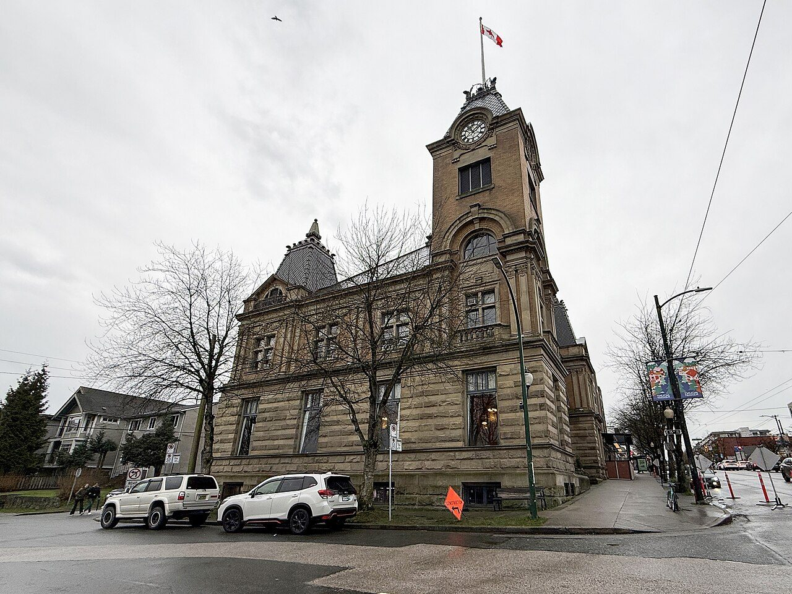
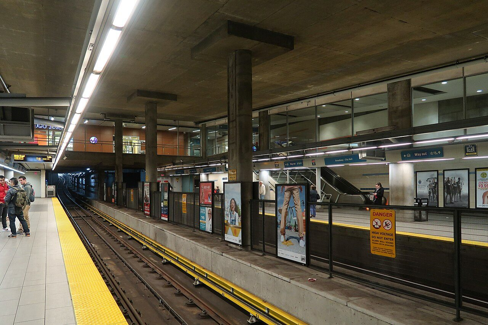

Living in Mount Pleasant.
The village at Main and Broadway, the pocket around City Hall, and why this neighbourhood keeps pulling people up the hill from False Creek.
The village at Main and Broadway, the pocket around City Hall, and why this neighbourhood keeps pulling people up the hill from False Creek.
Mount Pleasant has been a village longer than Vancouver has been a city, and it is about to get its own subway station. Old bones and new transit. That is the whole story of why people want to live here.

The settlement grew around Brewery Creek, and Heritage Vancouver notes it is the only Vancouver community that developed around a creek. The creek is buried now, but its name survives on buildings and businesses along Main.
The village centre was the triangle where Main, Broadway and Kingsway cross, on what Heritage Vancouver describes as an ancient Indigenous trail. The streetcar made it a place where people worked, shopped and lived within a few blocks. Thirteen buildings around it are on the city's Heritage Register, including the Mason Block from 1905, believed to be Vancouver's earliest concrete building. Walking Main between 6th and 12th is walking one of the oldest commercial strips in the city.

The western side of the neighbourhood is anchored by City Hall at Cambie and 12th. It opened on December 4, 1936, designed by Townley and Matheson, built through the Depression as a make-work project. The City describes its style as the turning point between Art Deco and the plainer Moderne that followed, with terrazzo floors, marble walls and gold-leafed ceilings inside. It has been a designated heritage building since 1976.
The blocks between City Hall and Main are the quiet part of Mount Pleasant. Tree lined avenues in the teens, original houses beside character conversions and newer townhomes, with Simon Fraser Elementary on West 15th, part of the neighbourhood since 1909. Mount Pleasant Park and Robson Park are the local green space.
Figures from the City of Vancouver's Broadway Plan approval, June 2022. The plan area runs from Clark Drive to Vine Street, between 1st and 16th Avenues.

Transit is the practical reason Mount Pleasant keeps climbing the list. The Canada Line has stopped at Broadway-City Hall since 2009, putting downtown, the airport and Richmond a short ride from the western half of the neighbourhood.
The bigger change is the Broadway Subway, the extension of the Millennium Line from VCC-Clark west to Arbutus. Two of its stations land here: an interchange at Broadway-City Hall, and Mount Pleasant Station at Main and Broadway. The project reported train testing underway in May 2026, with the last street detours lifting along Broadway. When it opens, the neighbourhood will have a subway stop at each end of its main street.

Photo: Ruth Hartnup, Wikimedia Commons, CC BY 2.0

Main Street is the neighbourhood's living room: independent restaurants, coffee, vintage and record shops. It has stayed local while much of the city has not, partly because the buildings are old and small and suit independent businesses. The Vancouver Mural Festival started here in 2016 and added roughly 500 murals across the city over nine summers before winding down in January 2025. The walls did not go anywhere, and the lanes between 7th and 12th are still one of the better free afternoons in Vancouver.
Living here means walking. From the avenues between Cambie and Main you can reach either high street in about ten minutes, and the housing mix keeps the streets interesting: early 1900s houses, 1990s heritage conversions and new townhomes, most with real gardens. The trade-offs are the usual ones for a neighbourhood people want. Parking is tight, the corridors are busy, and Broadway is under construction for a while yet. What you get back is a place with well over a century of history and a main street that still belongs to the people who live there.
South of False Creek, between roughly Cambie Street and Clark Drive, up to about 16th Avenue. The historic centre is the Main, Broadway and Kingsway triangle, and City Hall at Cambie and 12th marks the western edge. The avenues in between are the residential heart.
The avenues between Cambie and Main are quiet, tree lined and walkable, with Simon Fraser Elementary inside the neighbourhood since 1909 and Mount Pleasant Park, Robson Park and the community centre close by. Confirm the school catchment for any specific address, since boundaries can move.
It adds Mount Pleasant Station at Main and Broadway and turns Broadway-City Hall into an interchange with the Canada Line. Train testing began in May 2026. Practically, it means the neighbourhood will have rapid transit at both ends of its main street, which very few Vancouver neighbourhoods can say.
The plan allows up to 30,000 additional homes over 30 years, concentrated along Broadway and near the stations, with most new housing planned as rental. Height lands on the corridors first; the character streets south of Broadway change far more slowly. For most owners the plan is context, not a countdown. If you want to know what it means for your specific lot, that is a conversation we have often.
Early 1900s houses, heritage conversions, townhomes and condos, often on the same block. That mix is unusual for Vancouver, and it is why the streets feel varied rather than stamped out. It also means there is usually an entry point at more than one price level.
Actually walkable. From the middle of the neighbourhood you can reach Main Street or Cambie Village on foot in about ten minutes, the Canada Line in about the same, and City Hall, VGH and the Broadway offices without a car. It is one of the few parts of the city where a one car household is comfortable.